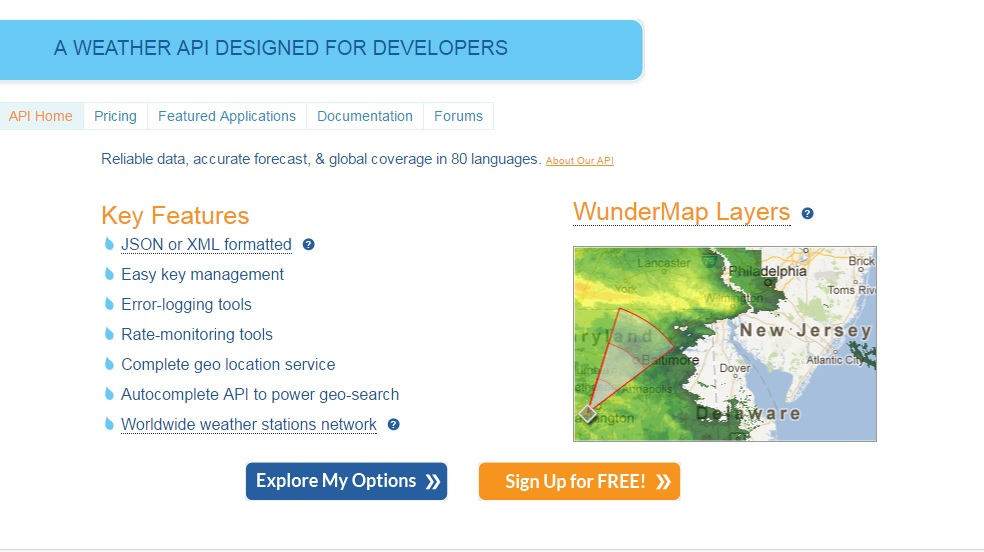
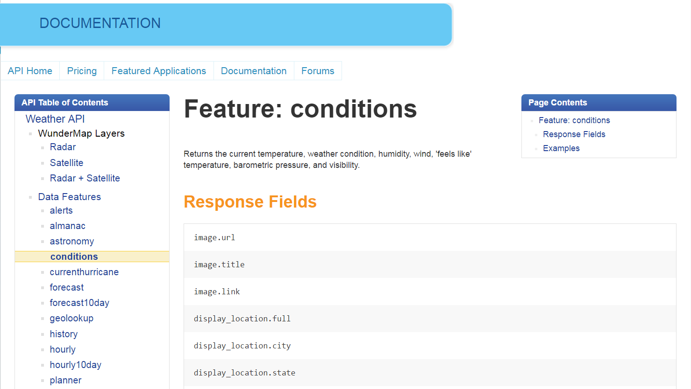
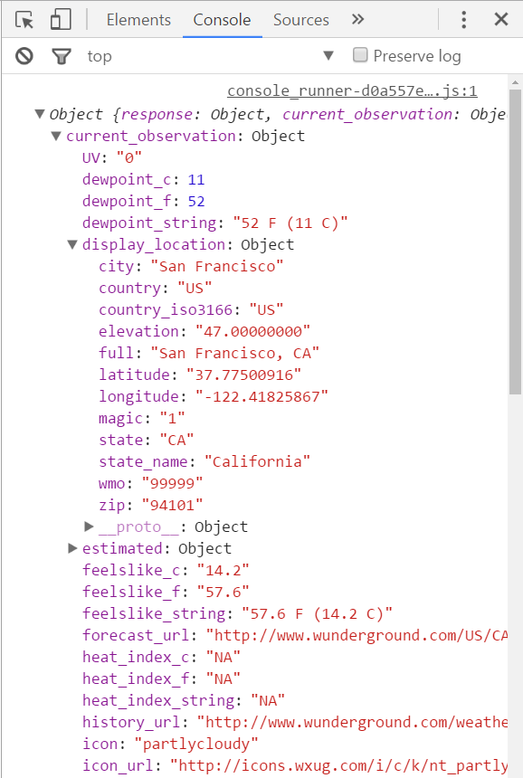
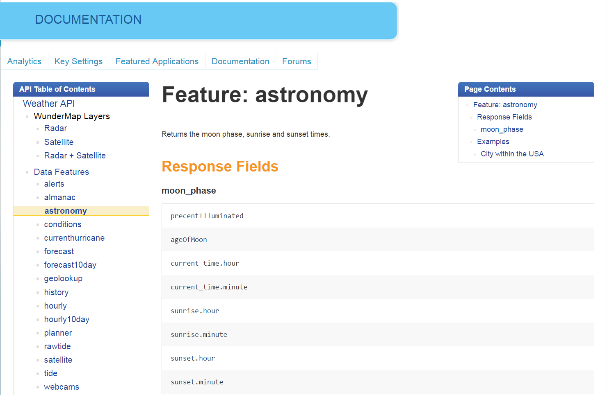
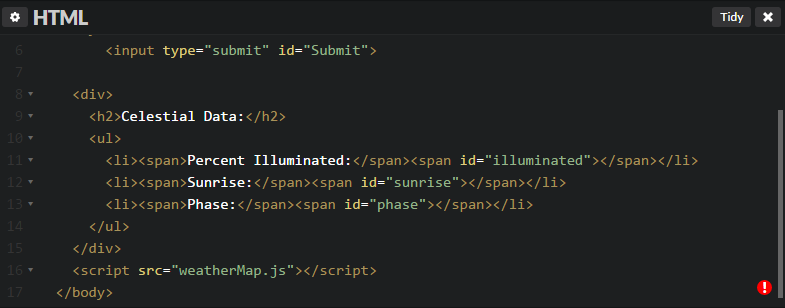
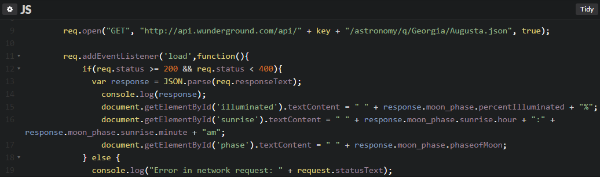

To get started using the Weather Underground API, head over to their API landing page,
shown below:

The process is less than intuitive, as you may be tempted to first click "Explore My Options", rather than "Sign Up For Free".
The former will guide you through selecting your plan, filling out the information concerning your use of the API, then direct you to a
page to create an account. After verifying your email, you will then need to sign into that account and fill out the API form a second time,
as it is only effective if you are already signed into a working account. So create a free account first, then fill out the API form to
avoid running in circles. After this is completed you will be given your API key as well as the option to edit or regenerate another.
Making a call
The documentation tab will take you to a list of API resources that are at your disposal. In order to utilize these functions it is necessary
to make an AJAX request to a specific URL for the set of data that you wish to access. Every URL will begin with "http://api.wunderground.com/api/"
and directly after this will be the API key that you obtained earlier. The rest of the URL is specific to the API resource, and will end
with the desired format of the response (JSON or XML). Take a look at the following code snippet that makes use of the "conditions"
Data Feature - specifically it calls the example URL on the documentation landing page.
Here we've made an AJAX request, implemented our key as a variable for ease of use, waited for the DOM to load, tied the request
to a Submit button, and loaded the desired response perameters to respective HTML elements. Notice the hierarchy of the response data,
then notice the response data presented for this exmple on the WU webpage:
With lack of proper indentation, the response text is hard to decypher, and one might deduce that to display the city of interest,
they would use response.display_location.city but will quickly find that this does not return anything. Since this is
utilizing the "condition" data feature, let's take a look at that section in the documentation, which can be accessed via the sidebar.


Here we can see the list of response fields for the conditions feature. Again we see "display_location.city" among other pieces of
response data in the same vein. This is, again, misleading. To see how the response data is actually structured, let's use a familar
debugging technique of printing information to the console. As you can see from the initial AJAX call in the JavaScript code above,
the response text is parsed to JSON and stored in a variable called response:
var response = JSON.parse(req.responseText)
And then it is logged to the console:
console.log(response)
. This is a great way to take a look at the entire response object, as shown here with trees expanded. We can now see that what we
thought to be the root of the response tree was actually the child of "current_obervation". This means that to access the city information
we need to access response.current_observation.display_location.city. Similarly, if we wanted to know that the temperature felt like
in Celcius, we would access response.current_observation.feelslike_c. Not only is this a great way to debug, but is also
very useful if you want to review every piece of data in a given call in real time, without having to assign a specific value to an
HTML element. Speaking of which, let's do that. While making calls to the API is fun in its own right, it would be nice to be able to take the data we've learned how to retrieve and
implement it in our own webpages. Let's take a look at what that would look like.
Making use of the API using HTML
We've already seen how we've stored the response text of our AJAX request in a variable named response and accessed individual data sets
with dot notation, according to the method structure inherent in the API. Now let's look at some HTML that will build and hold the data so that it can be displayed in our own page.
Here three spans are defined that are each asigned an id that match the data that we want to give them. They will be the
counterparts of the three assignments seen in the JavaScript code which are the following:
This will populate the HTML with the most up-to-date values of those parameters according to the API, which in this case,
are the city name, visibility and humidity for that city:
Now let's try another example using the astronomy data feature.
Here the API does mention the hierarchy of the response fields, stating that the data is housed under the "moon_phase" parameter.
This can be verified in the console.

In this example we list the illumination percentage of the moon, the name of that phase, and the
sunrise time for the location called in the request, which for this exmample is Augusta, Georgia. (Note that the data parameters may
not always be correct, e.g. "percentIlluminated" is misspelled on the API description page. This can be addressed in the console,
as always.)

This is an example of taking more than one parameter and combining them into one output. Sunrise (and sunset) are made
of separate data, namely the specific hour and minutes, and are called separately with sunrise.hour and sunset.minute. Each are
concatinated in our JavaScript and mapped to the same HTML element for sunrise.

Using Radar
Next let's look at something a little different. So far we have been making an AJAX call, parsing the response text and pulling
from it what we wanted to use. Now we are going to look at retrieving images from the API, which will not use the response but the
URL directly. First it must be noted that when trying to retrieve images from another server, you will run into an "Access-Control-Allow-Origin"
error without the proper header: req.setRequestHeader("Access-Control-Allow-Origin", "*"); This may also be added via a
Chrome extention as a second option. With this in mind, let's look at the code used to pull a radar image from the API.
Here the AJAX call is actually just for the condition data which are the city, temperature in fahrenheit and wind gust speed in mph.
To render the radar image, we use:
var newImg = document.createElement("img");
newImg.src = "http://api.wunderground.com/api/f61b08db479e20e7/radar/q/OR/Corvallis.png?width=280&height=280&newmaps=1";
document.getElementById("body").appendChild(newImg);
This creates a new variable named newImg, and sets it equal to a new img element. The src link is then set to the API url itself,
without actually making an AJAX call. In the parameters the height and width of the image are set, as well as the format (png) and location,
(Corcallis, OR). Then the element is appended to the body of the HTML document.
End of tutorial
Now that you have a better idea of how to navigate and utilize the Weather Underground API, go have fun!